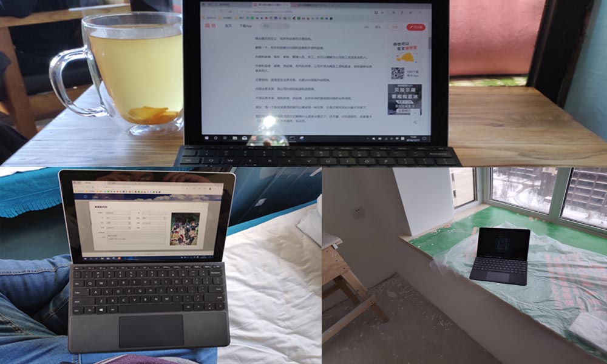
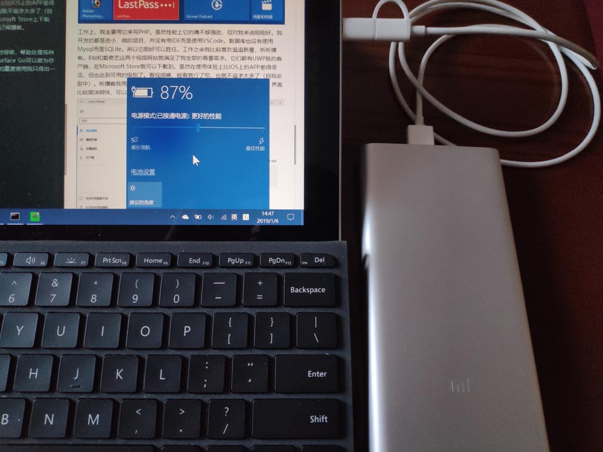
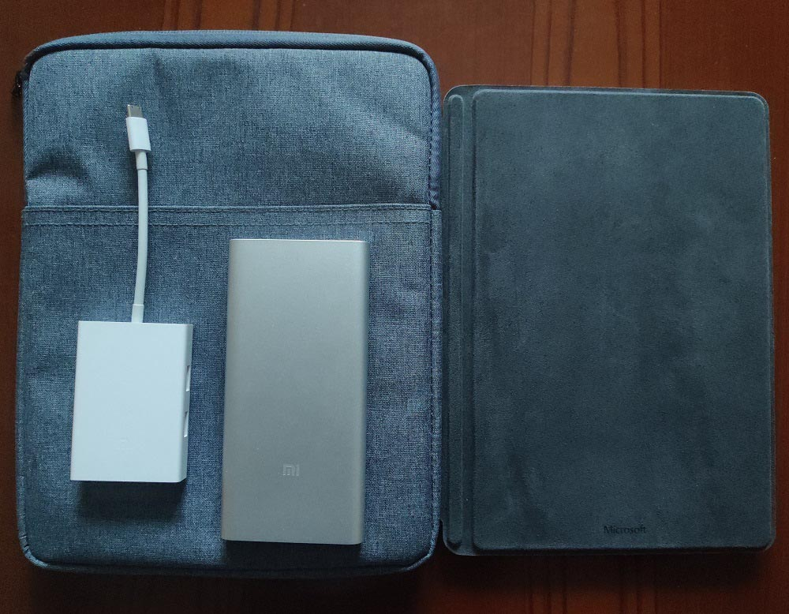
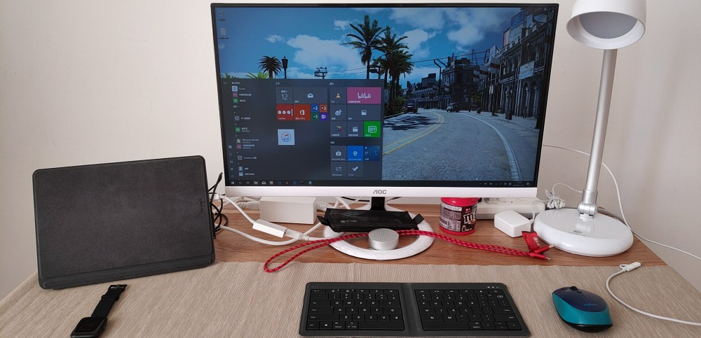
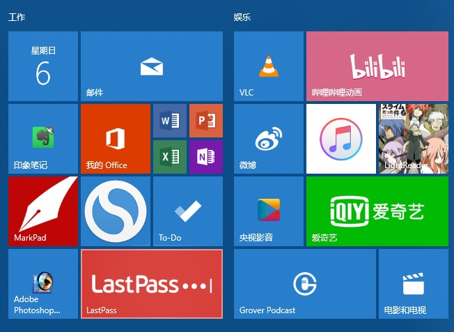
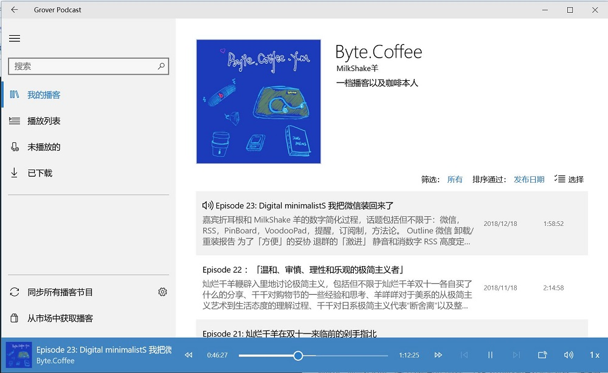

去年七月，微软发布了一款比Surface Pro更小更轻便的平板电脑Surface Go。同年八月，对微软产品颇有好感的我就购入了这台平板电脑——的低配版。用了五个多月，感觉良好。 我一直认为，选购电子产品的唯一标准就是实际需求。在满足需求的产品范围内选价格最低的那款。不能被商家宣传的各种花哨的功能和参数牵着鼻子走。我的需求是：能写简单的脚本程序，能写写笔记（印象笔记/OneNote），能简单办公，能追番剧，外出背着不会觉得沉。 虽然这台低配的Surface Go只有4G内存，奔腾4415Y的CPU，64G的eMMC存储器，但它刚好符合需求。4G的内存虽然比较紧凑但其实也并没有那么不堪，甚至我的朋友中还有人用4G内存的本子作为在公司开发JAVA项目的主力机；奔腾的4415Y也确实不怎么着，但是在这个性能过盛的时代，简单的办公应用它也能从容应对；最让我闹心的是eMMC！平时用惯了SSD后，eMMC还真是稍显慢了些。高配版用的是128G的SSD加上8G的内存，使用体验上好很多。不过考虑到价格因素，配齐一套高配版也要5000多块钱了，这个价格其实可以考虑低配的Surface Pro。
既然叫Surface Go，就得Go起来！
“移动办公”是这台机器的最大卖点。它小巧的体积就是为了让你带着它到处跑而设计的。这也是我买它的最大的理由。这五个月中我带着它出入咖啡厅，乘火车时，甚至在工地上使用后，越来越喜欢它了。

在这些场景中一般都不会做太重的工作，只以浏览和简单的文字编辑为主（说白了就是看看网页、打打字）。所以它性能不足这一缺点可以忽略，小巧轻便这一优点被大大地凸显出来。远道无轻债，外出时哪怕减少1克的重量都是好的。Surface Go的重量只有522克（不含键盘），背起来几乎感受不到重量。屏幕面积也只有10寸，和iPad相当。长时间单手握持也没有问题。接口方面，它只有一个耳机接口，一个USB-C，一个充电接口和一个TF卡槽。另外需要说明的是，你可以用充电宝通过它的USB-C口给它供电，但是无法充电。这一点比较有意思，我还是第一次见到能用充电宝供电的笔记本。倒是再也不用担心它的续航问题了。

配件方面，它可以使用Surface Pro的手写笔。但是除非你要画图或记笔记、标注，否则这支笔并不是必须的。并且它也不便宜。而官方键盘保护盖最好买下来。受体积限制，它比Surface Pro的键盘盖小了不少，显得比较局促。但在稍加适应后就可以打字如飞了。手感也算很不错了。至少在我心中它比iPad Pro的官方键盘手感好出很多。 若要外出，只需要背一个裸机+键盘保护套+淘宝随便买的内胆包。如果一定要接U盘或者连显示器，还需要一根USB-C的转接线。如果担心电量不够，那就再加一块充电宝好了。电源？除非要出去好几天，否则不用带。下图是我的出行套装：

Surface Go上的工作娱乐
在家的时候，我也把它当做主力机来使用。所谓的“主力机”其实也是根据你的需求来定的。每个人对主力机的定位或许不同。我是这样使用它的（请忽略桌子上乱七八糟的线）：

通过一根USB-C的转换器连着显示器，同时用最普通的蓝牙鼠标和键盘作为输入设备，这样它就成了我工作娱乐的主力机。

工作上，我主要用它来写PHP。虽然性能上的确不够强劲，但对我来说刚刚好。我开发的都是些小、微的项目，并没有用IDE而是使用VSCode，数据库也只是用了SQLite而已，所以它恰好可以胜任。工作之余我比较喜欢追追新番，听听播客。B站和爱奇艺这两个视频网站就满足了我全部的看番需求。它们都有UWP版的客户端，在Microsoft Store就可以下载到。虽然在使用体验上比IOS上的APP差得很远，但也达到可用的级别了。看视频嘛，能看就行了呗，也就不追求太多了（自我安慰中）。听播客我用Grover Podcast，同样也可以在Microsoft Store上下载到。界面比较简洁明快，可以通过搜索或者添加Feed URL来订阅播客。

总结
总之，Surface Go是一位相当棒的随身助理。它随时在你身边待命，帮助处理各种应急的工作、轻量的娱乐需求。低配版的Surface Go可以作为你主力机的补充，高配版则可以替代你的主力机。通过这五个月的重度使用我只得出一个结论：当初购买Surface Go的决定十分明智。
[此文原载于我的公众号——iFaluo的落英缤纷——上。原文地址：Go!Surface ]